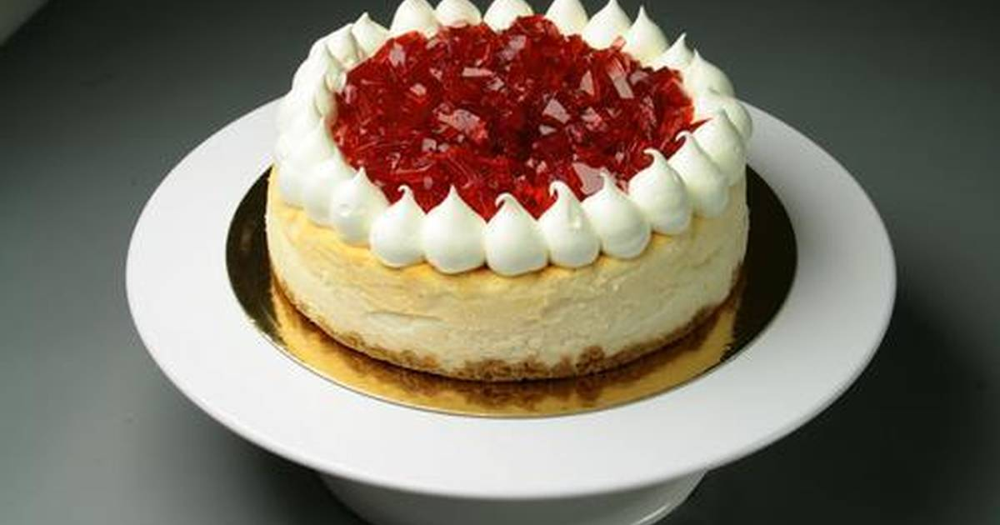

Merengue de limón

Ingredientes
- 3 claras de huevo
- 1 taza de azúcar
- 1 cucharadita de ralladura de limón
- 1 cucharada de jugo de limón
Pasos
- Precalienta el horno a 120°C (250°F).
- En un tazón grande, bate las claras de huevo hasta que estén espumosas.
- Agrega gradualmente el azúcar mientras continúas batiendo hasta que se formen picos suaves.
- Incorpora la ralladura y el jugo de limón, y mezcla suavemente.
- Coloca montones de merengue en una bandeja para horno forrada con papel pergamino.
- Hornea durante 45-50 minutos o hasta que estén dorados. Deja enfriar antes de servir.
Helado de Mango

Ingredientes
- 2 mangos maduros, pelados y cortados en trozos
- 1 taza de yogur natural
- 1/2 taza de azúcar
- 1 cucharadita de extracto de vainilla
Pasos
- Congela los trozos de mango durante al menos 2 horas.
- En una licuadora, mezcla los mangos con el yogur, el azúcar y el extracto de vainilla hasta obtener una mezcla suave.
- Vierte la mezcla en un recipiente para congelador y congela durante al menos 4 horas.
- Saca el helado unos minutos antes de servir para que sea más fácil de servir.
Pastel de queso
Ingredientes
- 2 tazas de migas de galletas (por ejemplo, galletas de vainilla trituradas)
- 1/2 taza de mantequilla derretida
- 2 paquetes (16 oz) de queso crema, a temperatura ambiente
- 1 taza de azúcar
- 1 cucharadita de extracto de vainilla
- 4 huevos
Pasos
- Precalienta el horno a 160°C (325°F).
- Mezcla las migas de galletas con la mantequilla derretida y presiona la mezcla en el fondo de un molde para pastel.
- En un tazón grande, bate el queso crema hasta que esté suave.
- Agrega el azúcar y el extracto de vainilla, y bate hasta que esté bien combinado.
- Añade los huevos uno a la vez, batiendo bien después de cada adición.
- Vierte la mezcla sobre la base de galletas y alisa la parte superior.
- Hornea durante aproximadamente 50-60 minutos o hasta que el centro esté casi firme.
- Deja enfriar a temperatura ambiente y refrigera durante al menos 4 horas antes de servir.